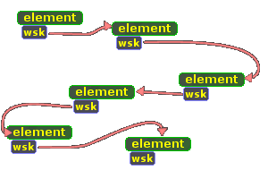

| << Najkrótsza droga Spis Strona g³ówna Stos >> |
Kolejka jest to specjalny rodzaj struktury danych, który pozwala na przechowywanie dynamicznych (dodawanych lub usuwanych w miarê wykonywania programu) danych bez wzglêdu na stopieñ sfragmentowania pamiêci. Kolejka jest dobr¹ alternatyw¹ dla rekurencji, która nawiasem mówi¹c korzysta ze stosu, a wiêc równie¿ pewnej odmiany kolejki. Nam przyda siê na przyk³ad do algorytmu wyszukiwania najkrótszej drogi w labiryncie.
Jeœli wiesz o co chodzi we wspomnianym algorytmie, to idea kolejki wydaje ci siê pewnie oczywista. Bierzemy punkt, badamy wszystkie 8 otaczaj¹cych go punktów, nastêpnie badamy otoczenie ka¿dego z tych oœmiu punktów itd. Zrobienie tego przy pomocy rekurencji jest dziecinnie proste, jednak my nie lubimy rekurencji (przeci¹¿a procesor i ogólnie jest niebezpieczna). Musimy wiêc gdzieœ zapamiêtywaæ kolejne punkty do sprawdzenia. Mo¿na by skorzystaæ ze zwyk³ej tablicy dynamicznej, jednak jest to bardzo kiepskie rozwi¹zanie. Za ka¿dym razem, gdy chcielibyœmy zapamiêtaæ nowy punkt w tablicy, musielibyœmy zaalokowaæ nowy obszar pamiêci, przenieœæ do niego "stare" dane, dopisaæ na koñcu nowy element, wreszcie zwolniæ "stary" obszar pamiêci. Wszystko to bardzo czasoch³onne, no a przy du¿ej liczbie elementów moglibyœmy napotkaæ k³opoty z fragmentacj¹ pamiêci. Co gorsza, równie¿ usuwanie elementów z tablicy by³oby tak k³opotliwe...
Dziêki kolejce wszystko to przestaje byæ problemem. Ka¿dy element kolejki ma "przyklejony" wskaŸnik do nastêpnego elementu, dziêki czemu kolejka mo¿e byæ rozproszona dos³ownie po ca³ej pamiêci naszego komputera. Wystarczy, ¿e zapamiêtamy gdzieœ adres pierwszego elementu i ju¿ "po nitce do k³êbka" potrafimy znaleŸæ wszystkie pozosta³e elementy. Przedstawia to rysunek:

Na rysunku mamy elementy kolejki, sk³adaj¹ce siê z elementu w³aœciwego (mo¿e on byæ dowolnego typu) oraz wskaŸnika na nastêpny element. Bez wzglêdu na to, ile elementów jest w kolejce, znamy tylko wskaŸnik do pierwszego elementu, do pozosta³ych musimy "dojœæ".
Taki rodzaj kolejki nazywa siê w ¿argonie programistów FIFO (First In First Out), poniewa¿ pierwszy element, który zostanie dodany do kolejki tylko jako pierwszy mo¿e zostaæ usuniêty. Dok³adnie tak samo "dzia³a" kolejka w sklepie: o ile nie wpakuje siê jakiœ kombatant albo kobieta w ci¹¿y, to klienci bêd¹ obs³ugiwani w takiej kolejnoœci, w jakiej weszli do sklepu ;-).
Jeœli jeszcze nie zd¹¿y³eœ tego wydedukowaæ, przedstawiê jak wygl¹da schemat uzyskiwania dostêpu do np. pi¹tego elementu kolejki. Znamy tylko adres pierwszego elementu, ale ten pierwszy element posiada "przyklejony" adres drugiego elementu. Pobieramy ten adres i w ten sposób mamy dany drugi element i adres (wskaŸnik) trzeciego. Pod adresem trzeciego elementu mamy te¿ wskaŸnik na czwarty element, a pod czwartym - na pi¹ty. Jak widaæ, uzyskanie dostêpu do ostatniego elementu mo¿e byæ czasoch³onne, dlatego nale¿y tak konstruowaæ algorytmy wykorzystuj¹ce kolejkê, aby raz pobrany element nie by³ ju¿ wiêcej potrzebny, wtedy mo¿na go od razu usun¹æ i dziêki temu element, którego w danej chwili potrzebujemy, zawsze bêdzie pierwszy i dostêp do niego bêdzie natychmiastowy :-). Jeœli zaœ to nam nie odpowiada, mo¿emy jeszcze przerobiæ nasz¹ kolejkê na stos, czyli innymi s³owy kolejkê LIFO (Last In First Out), która funkcjonuje w dok³adnie odwrotnym kierunku.
Zastanówmy siê najpierw nad prywatn¹ sekcj¹ naszej klasy cKOLEJKA. Przede wszystkim powinna ona zawieraæ deklaracjê struktury elementu kolejki. Za³o¿ymy sobie, ¿e dane elementu bêd¹ typu NOWY_TYP. Struktura pojedynczego elementu powinna zawieraæ jedn¹ zmienn¹ typu NOWY_TYP oraz jedn¹ typu NOWY TYP* - wskaŸnik na nastêpny element w kolejce.
Skoro mamy ju¿ strukturê elementu (nazwaliœmy j¹ sobie tELEM), deklarujemy dwa wskaŸniki do elementów: Pierwszy i Ostatni. WskaŸnik na pierwszy element bêdzie nam potrzebny, ¿eby odnaleŸæ pozosta³e elementy w kolejce; wskaŸnik na ostatni element wykorzystywany jest, kiedy dodajemy nowy element do kolejki. Ostatni¹ rzecz¹ w sekcji prywatnej jest licznik elementów w kolejce (tutaj elcount), który wprawdzie nie jest wykorzystywany bezpoœrednio przez klasê, ale mo¿e byæ zwrócony na zewn¹trz przez funkcjê LiczbaEl (o tym póŸniej).
Konstruktor i destruktor maj¹ proste zadania. Pierwszy tylko zeruje zmienn¹ elcount oraz oba wskaŸniki. Destruktor zwalnia zajêt¹ pamiêæ, wywo³uj¹c funkcjê Usun (usuniêcie pierwszego elementu kolejki) tak d³ugo, a¿ kolejka bêdzie pusta.
Dzia³ania funkcji Dodaj chyba nie trzeba objaœniaæ - do szczegó³ów dojdziemy póŸniej. Funkcja LiczbaEl, jak ju¿ mówiliœmy, zwraca wartoœæ zmiennej elcount. Wreszcie - funkcja Status. S³u¿y ona do uzyskania danych dowolnego elementu kolejki w dowolnym czasie. Oczywiœcie dojœcie do ostatniego elementu zajmie wiêcej czasu, ni¿ do pierwszego - taka jest idea kolejki. W³aœciwie przy wiêkszoœci zadañ, do których zwykle zaprzêga siê kolejkê, funkcja taka jest ca³kowicie zbêdna, ale te¿ raczej nie powinna zaszkodziæ ;-). Dorzuci³em j¹ g³ównie w celach edukacyjnych, aby pokazaæ, jak przejœæ przez wszystkie elementy kolejki nie usuwaj¹c nic po drodze.
|
// Plik kolejka.h class cKOLEJKA { private: struct tELEM { NOWY_TYP Dane; tELEM* Next; } *Pierwszy, *Ostatni; DWORD elcount; public: cKOLEJKA(); ~cKOLEJKA(); void Dodaj(NOWY_TYP elem); void Usun(NOWY_TYP* databuf); DWORD LiczbaEl(); NOWY_TYP Status(DWORD index); }; |
Czas przyjrzeæ siê w³aœciwemu kodowi Ÿród³owemu. Najpierw konstruktor i destruktor:
|
// Plik kolejka.cpp cKOLEJKA::cKOLEJKA() { elcount=0; Pierwszy = Ostatni = NULL; } cKOLEJKA::~cKOLEJKA() { for(DWORD i=0; i<elcount; i++) Usun(NULL); } |
Jak widaæ, oba s¹ doœæ banalne. Nawet nie ma co omawiaæ, wiêc przechodzimy dalej, czyli do dodawania elementu:
|
void cKOLEJKA::Dodaj(NOWY_TYP elem) { tELEM* Cur = new tELEM; if(++elcount==1) Pierwszy = Cur; else Ostatni->Next = Cur; Cur->Dane = elem; Cur->Next = NULL; Ostatni = Cur; } |
Mamy tu pomocniczy wskaŸnik Cur, pod którym alokujemy pamiêæ na nowy element. Jeœli dodajemy pierwszy element do listy, to jego adres l¹duje w zmiennej Pierwszy. W przeciwnym wypadku pos³ugujemy siê wskaŸnikiem Ostatni, który przechowuje nam adres ostatniego (poprzednio dodanego) elementu w kolejce. Adres tego elementu jest nam potrzebny, aby we wskaŸniku Next tego elementu umieœciæ adres elementu, który w³aœnie dodajemy. Natomiast wskaŸnik Next elementu, który dodajemy, ustawiamy oczywiœcie na NULL, poniewa¿ nastêpny po aktualnie dodawanym elemencie nie istnieje. Wreszcie - zapamiêtujemy nowy adres ostatniego elementu. Wszystko to mo¿e siê wydawaæ trochê dziwne, ale jednak jakoœ dzia³a ;-).
Teraz bierzemy siê za usuwanie elementu. Usuwaæ mo¿emy tylko pierwszy element kolejki - gdybyœmy usunêli któryœ ze œrodka, to element poprzedzaj¹cy ten usuniêty nadal wskazywa³by na obszar, który nale¿a³ wczeœniej do usuniêtego w³aœnie elementu, a w dodatku utracilibyœmy dostêp do wszystkich do elementów dodanych PO elemencie usuniêtym. Mo¿na by temu zaradziæ, przepisuj¹c wskaŸnik do elementu PO usuniêtym do elementu PRZED usuniêtym. Problem w tym, ¿e nie mo¿emy uzyskaæ elementu PRZED usuniêtym bez przechodzenia przez ca³¹ kolejkê od pocz¹tku, co wymaga³oby prawdopodobnie zbyt wiele czasu. Dlatego zreszt¹ nasza kolejka nosi nazwê jednokierunkowej.
Druga wa¿na rzecz wi¹¿¹ca siê z usuwaniem: zazwyczaj jeœli ju¿ usuwamy element, to raczej tylko wtedy, gdy chcemy go wykorzystaæ. Warto po³¹czyæ te dwie czynnoœci w jedn¹. Dlatego nasza funkcja Usun przyjmuje jako argument wskaŸnik do bufora, do którego zapisuje wartoœæ zmiennej Dane usuwanego elementu. Jeœli jako argument podaje NULL, wtedy oczywiœcie wartoœæ zmiennej nie jest nigdzie zapisywana (patrz kod destruktora klasy):
|
void cKOLEJKA::Usun(NOWY_TYP* databuf) { if(elcount<1) return; if(databuf!=NULL) *databuf=Pierwszy->Dane; //zwróæ usuwany element tELEM *tmp = Pierwszy->Next; //zapamiêtaj drugi element delete Pierwszy; //skasuj pierwszy element Pierwszy = tmp; //drugi element staje siê pierwszym if(--elcount==0) Pierwszy = NULL; } |
Jeœli mamy ju¿ sprawdzone, czy kolejka w ogóle zawiera jakieœ elementy oraz gdy zwróciliœmy wartoœæ usuwanego elementu i zmniejszyliœmy licznik, mo¿emy przyst¹piæ do w³aœciwego usuwania. Polega ono na takiej ma³ej roszadzie: zapamiêtujemy najpierw adres drugiego elementu (po usuniêciu pierwszego drugi stanie siê pierwszym :-)), zwalniamy pamiêæ zajêt¹ przez obecny pierwszy element, po czym adres dawnego drugiego elementu wpisujemy do wskaŸnika Pierwszy. To wszystko.
Funkcja LiczbaEl nie nale¿y do skomplikowanych:
|
DWORD cKOLEJKA::LiczbaEl() { return elcount; } |
Wreszcie - funkcja Status. Ma ona podawaæ wartoœæ elementu o indeksie index. Aby to zrobiæ, musimy przejœæ kolejno przez wszystkie elementy, pocz¹wszy od pierwszego. Wykonujemy to zadanie za pomoc¹ tymczasowego wskaŸnika Cur, który wskazuje na ten element kolejki, do którego aktualnie mamy dostêp. Inicjalnie jest to pierwszy element kolejki, nastêpnie pobieramy "rekurencyjnie" wskaŸniki do nastêpnych elementów, a¿ napotkamy element o indeksie równym index. Jeœli dojdziemy do koñca kolejki, co rozpoznawane jest tutaj w ten sposób, ¿e zmienna wskaŸnikowa Cur przyjmuje wartoœæ NULL (sk³adowa Next ostatniego elementu kolejki zawsze powinna byæ równa NULL).
Kryje siê tu drobny zgrzyt. Mianowicie funkcja Status jest tu skonstruowana trochê topornie, bo zawsze musi zwracaæ jak¹œ wartoœæ typu NOWY_TYP. Na wypadek, gdyby argument index zawiera³ indeks nieistniej¹cego argumentu, zwracamy jak¹œ tam wartoœæ zerow¹, ale i tak u¿ytkownik naszej kolejki musi sam zadbaæ, ¿eby wartoœæ index by³a prawid³owa (tj. mniejsza od liczby elementów kolejki), bo zwykle nie sposób odró¿niæ, czy zwrócone zero to prawid³owa wartoœæ elementu czy nie.
|
NOWY_TYP cKOLEJKA::Status(DWORD index) { tELEM* Cur = Pierwszy; DWORD licznik=0; while(Cur!=NULL) { if(licznik++==index) return Cur->Dane; Cur = Cur->Next; } return NOWY_TYP(0); } |
Ca³y ten kod z³o¿ony do kupy daje nam w pe³ni dzia³aj¹c¹ kolejkê. Mo¿na jeszcze dodaæ do tego kilka przydatnych rzeczy, jak na przyk³ad funkcjê UsunWszystko, która bêdzie spe³nia³a podobne zadanie, jak destruktor - szybko usuwa³a wszystkie elementy z kolejki na raz. Z tym jednak poradzisz sobie bez problemu sam, prawda? ;-)
W zale¿noœci od tego, co w³aœciwie chcesz wrzucaæ do kolejki, musisz oczywiœcie zmieniæ wszystkie ci¹gi znaków NOWY_TYP na nazwê typu zmiennej, któr¹ chcesz dodawaæ do kolejki. Jeszcze lepiej zrobiæ uniwersalny szablon kolejki, ale to równie¿ zostawiam ci jako pracê domow¹ :-).
Na koniec ma³y programik przyk³adowy, demonstruj¹cy dzia³anie kolejki w praktyce. Bêdzie to kolejka elementów typu int. Za³ó¿my, ¿e ca³y powy¿szy kod kolejki mamy ju¿ w pliku kolejka.cpp, natomiast prototyp klasy - w pliku kolejka.h:
|
#include <stdio.h> #include <iostream.h> #include "kolejka.h" cKOLEJKA Kolejka; void Wypisz() { //wypisujemy stan kolejki na ekran cout << "Aktualny stan kolejki: " << endl; for(int i=0; i<Kolejka.LiczbaEl(); i++) cout << "Element " << i << ": " << Kolejka.Status(i) << endl; } int main() { //dodajemy jakies trzy liczby do kolejki... Kolejka.Dodaj(11); Kolejka.Dodaj(25); Kolejka.Dodaj(34); //pokazujemy aktualny stan Wypisz(); //usuwamy pierwszy element int element; Kolejka.Usun(&element); cout << "Usunieto pierwszy element o wartosci " << element << endl; //ponownie wypisujemy stan - tym razem beda 2 liczby Wypisz(); //nie musimy czyscic kolejki - zrobi to za nas destruktor } |
Kolejka, zw³aszcza w po³¹czeniu ze stosem (szczegó³y w dalszej czêœci tego kursu) to bardzo przydatne narzêdzie w rêkach programisty. Szybko przekonasz siê, ¿e wrêcz nieodzowne. Zapewne wkrótce wszystko co tylko siê da, bêdziesz wrzuca³ do kolejki ;-). I prawdopodobnie bardzo dobrze :-).
| << Najkrótsza droga Spis Strona g³ówna Stos >> |